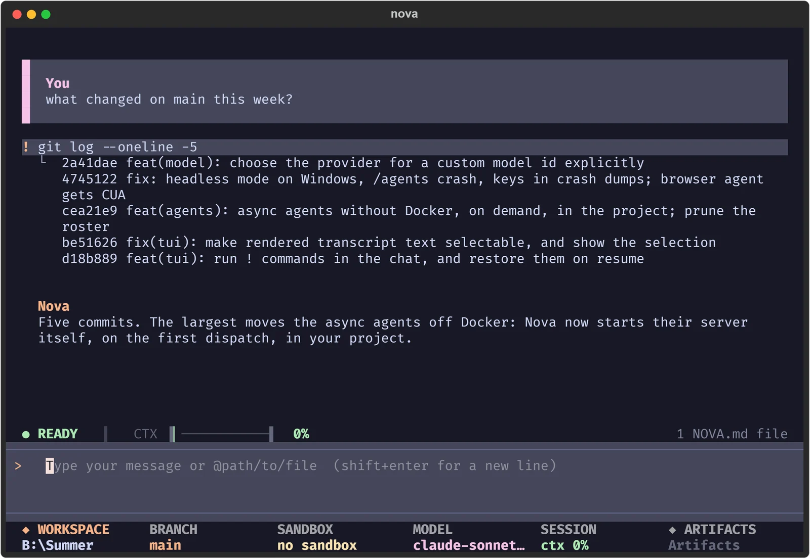
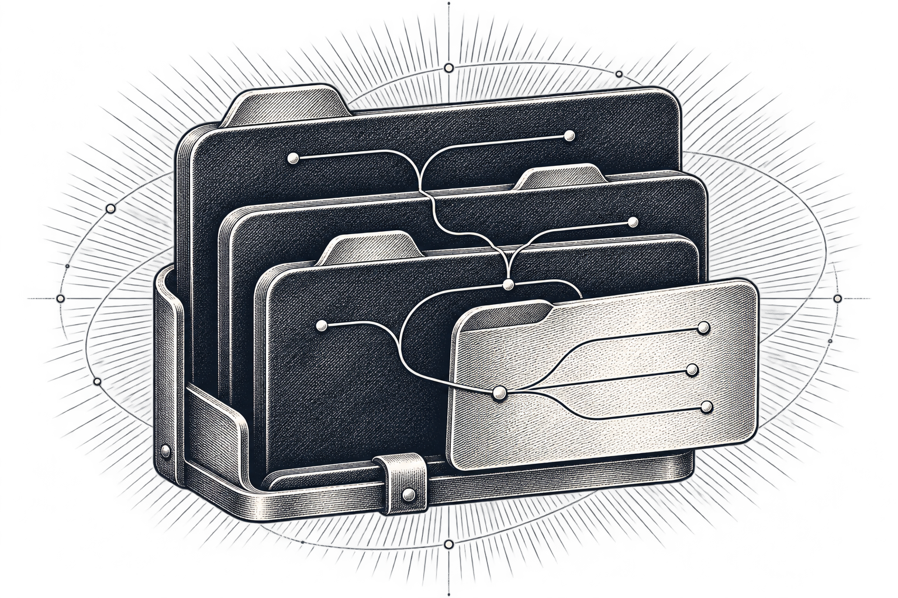
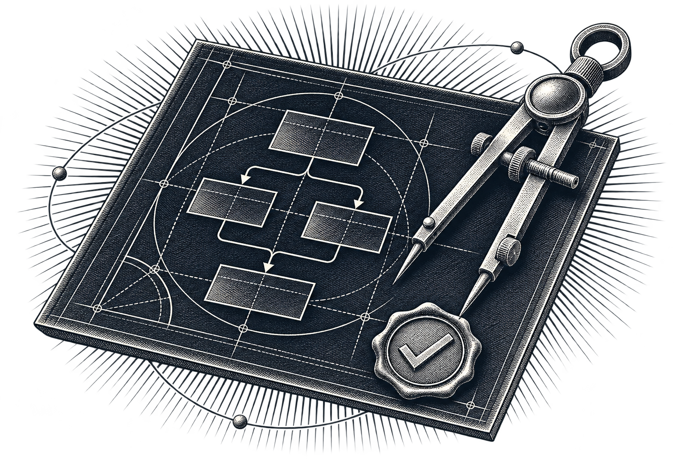

Describe the change
Point Nova at a repository and explain the bug, feature, or question in your own words.

This is the full landing page transformed for AI agent readability. Toggle to Human for the visual presentation. Verify current behavior, versions, and limits against the docs, changelog, and source repository.
uv tool install --python 3.11 novacode-cli installs the latest release from PyPI.uv tool install --python 3.11 --force "novacode-cli[browser,voice,agents-server,server,bedrock,computer]". Keep all wanted extras when reinstalling; external runtimes and voice models may need separate setup.uv tool upgrade novacode-cli. To replace a Git-based installation, use uv tool install --python 3.11 --force novacode-cli.nova. Note: an installed copy is not a development checkout; to work on Nova itself use the source checkout (uv run nova as documented).~/.nova/agents/<agent>/memories/).~/.nova/agents/<agent>/memories/; user-readable/editable.Limits/caveats: Feature availability depends on install extras, provider, platform, and configuration. Not a benchmark. Prefer docs/changelog/source for current behavior.
Give Nova a task in your repository. It explores the code, edits files and runs commands in your terminal. Review plans before implementation and configure which tool actions need approval.
NovaTap to launch
Nova works in the repository you give it, using the tools and commands available in your terminal.
Nova reads project context, works across files, and runs commands through the terminal. You can steer it as it goes and inspect the result.
Point Nova at a repository and explain the bug, feature, or question in your own words.
Nova explores relevant files, proposes plans when useful, and makes changes using its coding tools.
Review the conversation and file changes. Ask Nova to run the checks your project needs.

Useful notes live in files you can open, search, edit, or remove.
Nova keeps preferences and topic notes in readable Markdown. It can search the notes and open the source page, so you can see what it is using as context.

Memory is ordinary text, not a hidden profile. Read it directly, correct it when a detail changes, or delete notes you no longer want Nova to use.
Find the wiki in ~/.nova/agents/<agent>/memories/.
Memory can provide context; it does not prove that a remembered claim is still true.
Read about memoryReview a plan before implementation, and choose how tool approvals work for your project.
Nova can investigate in plan mode before it changes code. Tool approvals follow a policy you can configure, with hard-coded denials still enforced.
Use a plan to inspect the proposed approach and decide whether to proceed. Approved plans are saved with the project and in Nova's archive.
Choose when Nova asks before using tools. Approval behavior is configurable, so review the policy that fits your workflow.
Read about permissions
Nova requires Python 3.11 or newer and uv. Install the command-line app, then run nova from your project. To work on Nova itself, use the source checkout instructions.
Windows, macOS and Linux · PyPI release
uv tool install --python 3.11 novacode-cliOptional · browser, voice, agents, server, Bedrock and computer
uv tool install --python 3.11 --force "novacode-cli[browser,voice,agents-server,server,bedrock,computer]"any platform · then run
novaRelease 1.2.1 is on PyPI. Upgrade with uv tool upgrade novacode-cli. Choose a hosted model provider or configure a local Ollama model.
± Extras install Python dependencies; voice models, browser binaries and computer runtimes may need separate setup. Keep all wanted extras when reinstalling. For changes to Nova itself, follow the source checkout instructions and use uv run nova.
The practical details for getting started.
Nova is an open-source coding agent for the terminal. It can explore a repository, edit files, run commands, and help you understand the code. Read the documentation.
In Markdown files under ~/.nova/agents/<agent>/memories/. You can read and edit these files yourself. Memory is context, not verification.
Tool approvals are configurable by operation. Plan mode lets you review an approach before implementation, and hard-coded denials cannot be disabled through the approval policy. See permission details.
Nova supports hosted providers and local Ollama models. It requires Python 3.11 or newer and runs on macOS, Linux, and Windows. Some providers need their own account or API credentials.
Approval still applies. Memory still lands in files you can read. The first thing it does is look around before it touches anything.
plate 07 · the emblem
drag or use arrow keys to turn